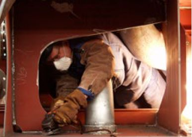

Bilder A6.1 bis A6.6 zeigen Beispiele für begrenzte Bewegungsfreiheit in Verbindung mit großflächiger Berührung metallisch leitfähiger Teile.

Bild A6.1

Bild A6.2

Bild A6.3

Bild A6.4

Bild A6.5

Bild A6.6

Bild A6.7: Rohrgraben mit Holzverbau: feuchtes Holz ist leitfähig.
Bilder A6.8 bis A6.10 zeigen Arbeitssituationen mit körperlicher Zwangshaltung und großflächiger Berührung leitfähiger Teile.

Bild A6.8

Bild A6.9

Bild A6.10

Bild A6.11
Trotz großem Behälterdurchmesser ist durch die eingenommene Körperhaltung eine begrenzte Bewegungsfreiheit gegeben. Im Fehlerfall kann eine gefährliche Körperdurchströmung (siehe Anhang 5) auftreten. Aufgrund der Zwangshaltung ist die Möglichkeit der Unterbrechung dieser Berührung eingeschränkt (vergleiche hierzu Bild A7.1 in Anhang 7).